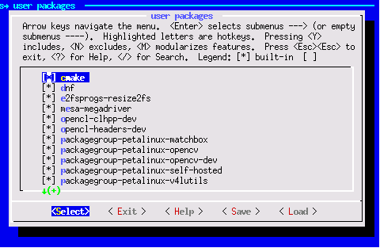
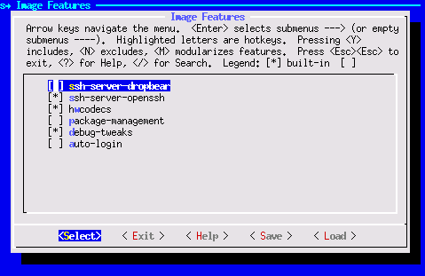
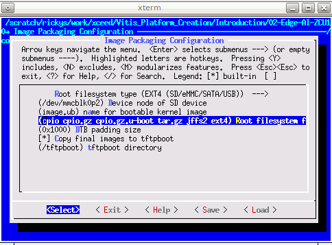

Step 2: Create the Software Components with PetaLinux¶
A Vitis platform requires software components. Xilinx provides common software images for quick evaluation. Here since we’d like to demonstrate more software environment customization, we’ll use the PetaLinux tools to create the Linux image and sysroot with XRT support, together with some more advanced tweaks. Among all the customizations, the XRT installation and ZOCL device tree setup are mandatory. Other customizations are optional. The customization purposes are explained. Please feel free to pick your desired customization.
Yocto or third-party Linux development tools can also be used as long as they produce the same Linux output products as PetaLinux.
PetaLinux Project Settings¶
Setup PetaLinux environment:
source <petaLinux_tool_install_dir>/settings.shCreate a PetaLinux project named zcu104_custom_plnx and configure the hw with the XSA file we created before:
petalinux-create --type project --template zynqMP --name zcu104_custom_plnx cd zcu104_custom_plnx petalinux-config --get-hw-description=<vivado_design_dir>
After this step, your directory hierarchy looks like this.
- zcu104_custom_platform # Vivado Project Directory - zcu104_custom_plnx # PetaLinux Project Directory
A petalinux-config menu would be launched, select DTG Settings->MACHINE_NAME, modify it to
zcu104-revc. Select OK -> Exit -> Exit -> Yes to close this window.Note: If you are using a Xilinx development board it is recommended to modify the machine name so that the board configurations would be involved in the DTS auto-generation. If you’re using a custom board, you would need to configure the associated settings(e.g. the PHY information DTS node) by yourself manually.
Customize Root File System, Kernel, Device Tree and U-boot¶
Add user packages by appending the CONFIG_x lines below to the <your_petalinux_project_dir>/project-spec/meta-user/conf/user-rootfsconfig file.
Note: This step is not a must but it makes it easier to find and select all required packages in next step. If this step is skipped, please enable the required packages in next step.
Packages for base XRT support:
CONFIG_packagegroup-petalinux-xrt CONFIG_xrt-dev
packagegroup-petalinux-xrt is required for Vitis acceleration flow. It includes XRT and ZOCL.
xrt-dev is required in 2020.1 even when we’re not creating a development environment due to a known issue that a soft link required by the deployment environment is packaged into it. XRT 2020.2 fixes this issue.
Packages for easy system management
CONFIG_dnf CONFIG_e2fsprogs-resize2fs CONFIG_parted
dnf is for package package management
parted and e2fsprogs-resize2fs can be used for ext4 partition resize
Packages for Vitis-AI dependencies support:
CONFIG_packagegroup-petalinux-vitisai
Packages for natively building Vitis AI applications on target board:
CONFIG_packagegroup-petalinux-self-hosted CONFIG_cmake CONFIG_packagegroup-petalinux-vitisai-dev CONFIG_xrt-dev CONFIG_opencl-clhpp-dev CONFIG_opencl-headers-dev CONFIG_packagegroup-petalinux-opencv CONFIG_packagegroup-petalinux-opencv-dev
Packages for running Vitis-AI demo applications with GUI
CONFIG_mesa-megadriver CONFIG_packagegroup-petalinux-x11 CONFIG_packagegroup-petalinux-v4lutils CONFIG_packagegroup-petalinux-matchbox
Run
petalinux-config -c rootfsand select user packages, select name of rootfs all the libraries listed above.
Enable OpenSSH and disable dropbear Dropbear is the default SSH tool in Vitis Base Embedded Platform. If OpenSSH is used to replace Dropbear, the system could achieve 4x times faster data transmission speed (tested on 1Gbps Ethernet environment). Since Vitis-AI applications may use remote display feature to show machine learning results, using OpenSSH can improve the display experience.
a) Still in the RootFS configuration window, go to root directory by select Exit once. b) Go to Image Features. c) Disable ssh-server-dropbear and enable ssh-server-openssh and click Exit. 
d) Go to Filesystem Packages-> misc->packagegroup-core-ssh-dropbear and disable packagegroup-core-ssh-dropbear. Go to Filesystem Packages level by Exit twice.
e) Go to console -> network -> openssh and enable openssh, openssh-sftp-server, openssh-sshd, openssh-scp. Go to root level by Exit four times.
Enable Package Management
a) In rootfs config go to Image Features and enable package-management and debug_tweaks option b) Click OK, Exit twice and select Yes to save the changes.
Disable CPU IDLE in kernel config.
CPU IDLE would cause CPU IDLE when JTAG is connected. So it is recommended to disable the selection during project development phase. It can be enabled for production to save power. a) Type
petalinux-config -c kernelb) Ensure the following items are TURNED OFF by entering ‘n’ in the [ ] menu selection:CPU Power Mangement > CPU Idle > CPU idle PM support
CPU Power Management > CPU Frequency scaling > CPU Frequency scaling C) Exit and Save.
Update the Device tree.
Append the following contents to the project-spec/meta-user/recipes-bsp/device-tree/files/system-user.dtsi file.
zyxclmm_drm node is required by zocl driver, which is a part of Xilinx Runtime for Vitis acceleration flow.
axi_intc_0 node overrides interrupt inputs numbers from 0 to 32. Since there was nothing connected to the interrupt controller in the hardware design, it cannot be inferred in advance.
sdhci1 node decreases SD Card speed for better card compatibility on ZCU104 board. This only relates to ZCU104. It’s not a part of Vitis acceleration platform requirements.
Note: an example file is provided in ref_files/step2_petalinux/system-user.dtsi.
&amba { zyxclmm_drm { compatible = "xlnx,zocl"; status = "okay"; interrupt-parent = <&axi_intc_0>; interrupts = <0 4>, <1 4>, <2 4>, <3 4>, <4 4>, <5 4>, <6 4>, <7 4>, <8 4>, <9 4>, <10 4>, <11 4>, <12 4>, <13 4>, <14 4>, <15 4>, <16 4>, <17 4>, <18 4>, <19 4>, <20 4>, <21 4>, <22 4>, <23 4>, <24 4>, <25 4>, <26 4>, <27 4>, <28 4>, <29 4>, <30 4>, <31 4>; }; }; &axi_intc_0 { xlnx,kind-of-intr = <0x0>; xlnx,num-intr-inputs = <0x20>; interrupt-parent = <&gic>; interrupts = <0 89 4>; }; &sdhci1 { no-1-8-v; disable-wp; };
Add EXT4 rootfs support
Since Vitis-AI software stack is not included in PetaLinux yet, they need to be installed after PetaLinux generates rootfs. PetaLinux uses initramfs format for rootfs by default, it can’t retain the rootfs changes in run time. To make the root file system retain changes, we’ll use EXT4 format for rootfs in second partition while keep the first partition FAT32 to store boot.bin file.
Run
petalinux-config, go to Image Packaging Configuration, select Root File System Type as EXT4, and appendext4to Root File System Formats. Exit and Save.
Update bootargs to allow Linux to boot from EXT4 partition. There are various ways to update bootargs. Please take either way below.
Run
petalinux-configChange DTG settings -> Kernel Bootargs -> generate boot args automatically to NO and update User Set Kernel Bootargs to
earlycon console=ttyPS0,115200 clk_ignore_unused root=/dev/mmcblk0p2 rw rootwait cma=512M. Click OK, Exit thrice and Save.Update in system-user.dtsi: add
chosennode in root in addition to the previous changes to this file.
/include/ "system-conf.dtsi" / { chosen { bootargs = "earlycon console=ttyPS0,115200 clk_ignore_unused root=/dev/mmcblk0p2 rw rootwait cma=512M"; }; };
Please note in the bootargs, we also set these options:
clk_ignore_unused: it tells Linux kernel don’t turn off clocks if this clock is not used. It’s useful clocks that only drives PL kernels because PL kernels are not represented in device tree.
cma=512M: CMA is used to exchange data between PS and PL kernel. The size for CMA is determined by PL kernel requirements. Vitis-AI/DPU needs at least 512MB CMA.
Build PetaLinux Images¶
From any directory within the PetaLinux project, build the PetaLinux project.
petalinux-build
The PetaLinux image files will be generated in
/images/linux directory. Create a sysroot self-installer for the target Linux system
petalinux-build --sdk
The generated sysroot package sdk.sh will be located in
linux/image directory. We’ll extract it in next step.
Note: Now HW platform and SW platform are all generated. Next we would package the Vitis Platform.
Fast Track¶
Scripts are provided to re-create PetaLinux project and generate outputs. To use these scripts, please run the following steps.
Run build
# cd to the step directory, e.g. cd step2_petalinux make all
To clean the generated files, please run
make clean
Note: The Fast Track scripts extracts the sysroot to
Copyright© 2020 Xilinx